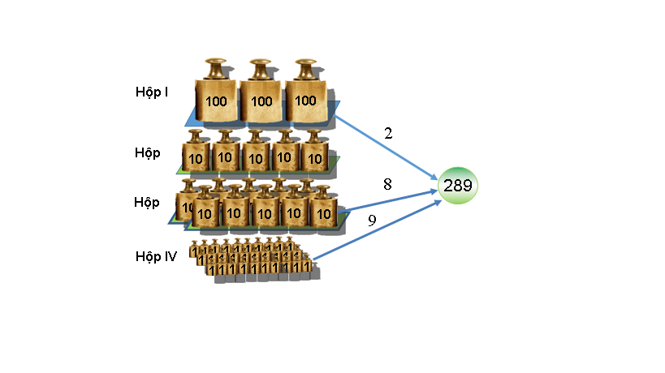

EXACT - Cân đúng
Giới hạn thời gian: 1.0 giây
Giới hạn bộ nhớ: 128 megabyte
Steve là nhân viên của một phòng thí nghiệm hóa. Hôm nay, để làm thí nghiệm Steve cần cân đúng x nanogram (ng) hóa chất. Trong phòng thí nghiệm có n hộp đựng quả cân, hộp thứ i có qi quả cân, mỗi quả có khối lượng 10ki ng. Thiết bị nano rất tinh tế nên Steve muốn mở ít hộp nhất để cân.

Giả thiết có 4 hộp đựng quả cân, hộp thứ nhất có 3 quả, mỗi quả 100 ng, hộp thứ 2 có 5 quả 10 ng, hộp thứ 3 có 8 quả 10ng và hộp thứ tư có 30 quả 1 ng. Để cân 289 ng hóa chất cần mở tối thiể 3 hộp: thứ nhất, thứ 3 và thứ tư.
Cho biết thông tin về các hộp và x – khối lượng hóa chất cần cân. Háy xác định số lượng hộp tối thiểu cần mở và chỉ ra các hộp đó. Nếu không thể cân đúng được thì đưa ra số -1.
Dữ liệu: Vào từ file văn bản EXACT.INP:
 Dòng đầu tiên chứa 2 số nguyên x và n (1 ≤ x ≤ 1018, 1 ≤ n ≤ 105),
Dòng đầu tiên chứa 2 số nguyên x và n (1 ≤ x ≤ 1018, 1 ≤ n ≤ 105),
Dòng thứ i trong n dòng sau chứa 2 số nguyên ki và qi (0 ≤ ki ≤ 18, 1 ≤ qi×10ki ≤ 1018).
Kết quả: Đưa ra file văn bản EXACT.OUT, nếu không có cách cân thì đưa ra số -1, nếu có cách cân thì đưa ra số hộp tối thiểu cần mở.
Ví dụ
-
input289 4
2 3
1 5
1 8
0 30output3